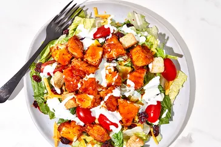

Go Back
How to Sticky Fingers Salad

These are the ingredients you'll need to it:
- 12 frozen breaded chicken strips
- 2 tablespoons butter
- 1/2 cup hot sauce, (such as Frank's RedHot® Sauce)
- 1 cup brown sugar
- 1/4 cup water
- 8 cups chopped Romaine lettuce
- 1 cup grape tomatoes, halved
- 1 cup shredded Cheddar cheese
- 1 cup croutons
- 1/2 cup dried sweetened cranberries
- 1/2 cup ranch dressing, or as needed
Step-by-step recipe:
- Preheat the oven to 400 degrees F (200 degrees C). Place chicken strips on a baking sheet.
- Bake chicken in the preheated oven until crispy, about 20 minutes. Alternatively, cook chicken strips according to package directions.
- Meanwhile, prepare sauce. Combine butter, hot sauce, brown sugar and water in a medium saucepan. Bring mixture to a boil over medium-high heat, stirring occasionally. Reduce to a simmer and cook, stirring occasionally, until slightly thickened, about 5 minutes.
- Divide lettuce, tomatoes, cheese, croutons and cranberries evenly among 4 dinner plates. Toss chicken with sauce and divide chicken among the four salads. Drizzle with ranch dressing and serve immediately.